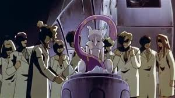
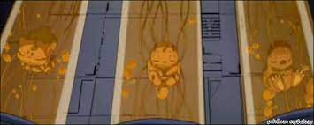

A origem do Pokemon 150
Essa é uma hitória mais conhecida pela comunidade, porém não deixa de ser uma histórias clássica que merece ser contada. Mewtwo, esse pokemon não nasceu de forma natural, ele foi criado por cientistas que estavam mechendo com o DNA de outro pokemon, um pokemon lendário que muitos acreditam ser a origem de todos os pokemons.
Porém, mewtwo não ficou feliz em ser usado como rato de laboratório para cientistas egoistas. Então ele decidiu criar um exército de clones para se vingar daqueles que o criaram.
Por sorte essa possível crise foi impedida e os pokemons decidiram escolher a paz, tudo porcausa de um garoto de 10 anos: Ash Ketchum.
Surge um novo mascote
A ideia de ter um mascote foi amadurecendo e a missão foi passada para uma profissional da área. A ilustradora Russa Irina Blok, também funcionária do Google, ficou com a missão de representar o pequeno robô de uma maneira mais agradável.

A ideia principal da Irina era representar tudo graficamente com poucos traços e de forma mais chapada. O desenho também deveria gerar identificação rápida com quem o olha. Surgiu então o Bugdroid, o novo mascote do Android.

A principal inspiração para os traços do novo Bugdroid veio daqueles bonequinhos que ilustram portas de banheiro para indicar o gênero de cada porta. Conta a lenda que a artista estava criando em sua mesa no escritório do Google e olhou para o lado dos banheiros e a identificação foi imediata: simples, limpo, objetivo.
Então é isso! Espero que você tenha gostado do nosso artigo com essa curiosidade sobre o sistema Android e seu simpático mascote.